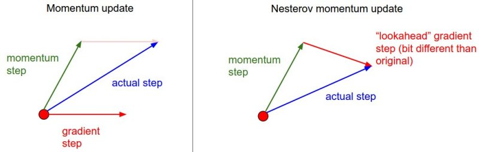
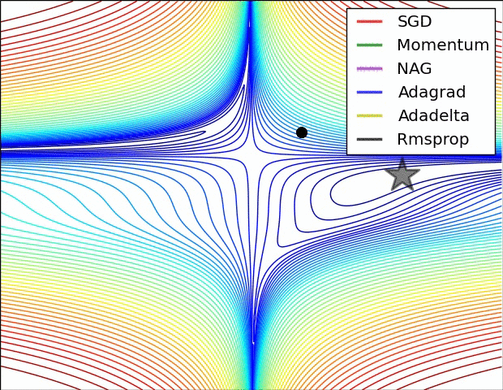
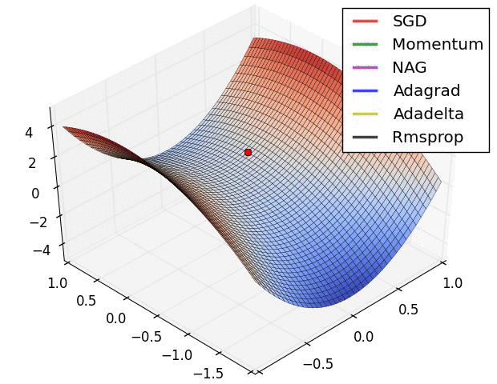
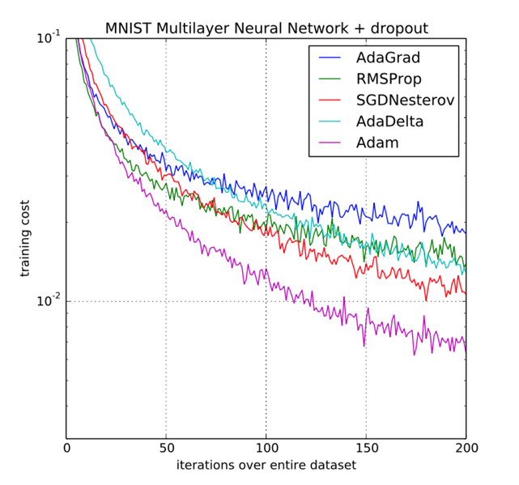

Module 和 Optimizer¶
首先说明：在神经网络构建方面，PyTorch 也有面向对象编程和函数式编程两种形式，分别在 torch.nn 和 torch.nn.functional 模块下面。面向对象式编程中，状态（模型参数）保存在对象中；函数式编程中，函数没有状态，状态由用户维护；对于无状态的层（比如激活、归一化和池化）两者差异甚微。应用较广泛的是面向对象式编程，本文也重点介绍前者。
Module 是什么¶
- 有状态的神经网络计算模块
- 与 PyTorch 的 autograd 系统紧密结合，与 Parameter、Optimizer 共同组成易于训练学习的神经网络模型
- 方便存储、转移。
torch内置序列化与反序列化方法、在cpu、gpu、tpu等设备之间无缝切换、进行模型剪枝、量化、JIT 等
关键点就两个：状态和计算（这怎么听起来这么像动态规划）
torch.nn.Module 是 torch 中所有神经网络层的基类。
Module 的组成：
submodule：子模块Parameter：参数，可跟踪梯度，可被更新Buffer：Buffer 是状态的一部分，但是不是参数，就比如说BatchNorm的running_mean不是参数，但是是模型的状态。
公有属性
training：标识是在train模式还是在eval模式，可通过Module.train()和Module.eval()切换（或者可以直接赋值）
公有方法
注意，Module 的方法如果不加说明都是 in-place 操作
cast 类¶
bfloat16()half()float()double()type(dst_type)to(dtype)
设备间搬运类¶
cpu()cuda(device=None)to(device)
前向计算¶
forwardzero_grad
增加子模块¶
add_module(module, name)：挂一个命名为name的子模块上去register_module(module, name)：同上register_buffer(name, tensor, persistent=True)：挂buffer
挂 hook¶
PyTorch 1.11 一共有五个，常用来打印个向量的类型，或者提示进度之类，或者丢进 TensorBoard 之类的
register_backward_hook(hook)register_forward_hook(hook)register_forward_pre_hook(hook)register_full_backward_hook(hook)register_load_state_dict_post_hook(hook)
迭代（只读）¶
modules()：返回一个递归迭代过所有module的迭代器。相同module只会被迭代过一次。children()：Returns an iterator over immediate children modules. 与modules()的区别是本函数只迭代直接子节点，不会递归。parameters(recurse=True)：Returns an iterator over module parameters. This is typically passed to an optimizer. 若recurse=True会递归，否则只迭代直接子节点。named_children()：上述函数的命名版本。named_modules()named_parameters()
迭代并修改¶
apply(fn)：对self自己和所有子模块（.children()）递归应用fn，常用于初始化权值
序列化¶
load_state_dict(state_dict, strict=True)：将一个state_dict载入自己的参数state_dict：返回自己的state_dict，可以使用torch.save保存之
数据格式¶
to(memory_format)：memory_format在Tensor一节有写。
杂项¶
extra_reprtrainevalget_submoduleget_submoduleset_extra_stateshared_memory_：Moves the underlying storage to CUDA shared memory. 只对CUDA端生效。移动后的 Tensor 不能进行resize。to_empty：Moves the parameters and buffers to the specified device without copying storage.
Module 的使用¶
import torch.nn as nn
import torch.nn.functional as F
class Model(nn.Module):
def __init__(self):
super().__init__()
self.conv1 = nn.Conv2d(1, 20, 5)
self.conv2 = nn.Conv2d(20, 20, 5)
def forward(self, x):
x = F.relu(self.conv1(x))
return F.relu(self.conv2(x))Module 的常用类¶
对于神经网络中的常用模块，PyTorch 已经提供了高性能的实现。
参数¶
Parameter |
A kind of Tensor that is to be considered a module parameter. |
|---|---|
UninitializedParameter |
A parameter that is not initialized. |
UninitializedBuffer |
A buffer that is not initialized. |
容器¶
Module |
Base class for all neural network modules. |
|---|---|
Sequential |
A sequential container. |
ModuleList |
Holds submodules in a list. |
ModuleDict |
Holds submodules in a dictionary. |
ParameterList |
Holds parameters in a list. |
ParameterDict |
Holds parameters in a dictionary. |
通用 hook
register_module_forward_pre_hook |
Registers a forward pre-hook common to all modules. |
|---|---|
register_module_forward_hook |
Registers a global forward hook for all the modules |
register_module_backward_hook |
Registers a backward hook common to all the modules. |
register_module_full_backward_hook |
Registers a backward hook common to all the modules. |
卷积层¶
nn.Conv1d |
Applies a 1D convolution over an input signal composed of several input planes. |
|---|---|
nn.Conv2d |
Applies a 2D convolution over an input signal composed of several input planes. |
nn.Conv3d |
Applies a 3D convolution over an input signal composed of several input planes. |
nn.ConvTranspose1d |
Applies a 1D transposed convolution operator over an input image composed of several input planes. |
nn.ConvTranspose2d |
Applies a 2D transposed convolution operator over an input image composed of several input planes. |
nn.ConvTranspose3d |
Applies a 3D transposed convolution operator over an input image composed of several input planes. |
nn.LazyConv1d |
A torch.nn.Conv1d module with lazy initialization of the in_channels argument of the Conv1d that is inferred from the input.size(1). |
nn.LazyConv2d |
A torch.nn.Conv2d module with lazy initialization of the in_channels argument of the Conv2d that is inferred from the input.size(1). |
nn.LazyConv3d |
A torch.nn.Conv3d module with lazy initialization of the in_channels argument of the Conv3d that is inferred from the input.size(1). |
nn.LazyConvTranspose1d |
A torch.nn.ConvTranspose1d module with lazy initialization of the in_channels argument of the ConvTranspose1d that is inferred from the input.size(1). |
nn.LazyConvTranspose2d |
A torch.nn.ConvTranspose2d module with lazy initialization of the in_channels argument of the ConvTranspose2d that is inferred from the input.size(1). |
nn.LazyConvTranspose3d |
A torch.nn.ConvTranspose3d module with lazy initialization of the in_channels argument of the ConvTranspose3d that is inferred from the input.size(1). |
nn.Unfold |
Extracts sliding local blocks from a batched input tensor. |
nn.Fold |
Combines an array of sliding local blocks into a large containing tensor. |
池化层¶
nn.MaxPool1d |
Applies a 1D max pooling over an input signal composed of several input planes. |
|---|---|
nn.MaxPool2d |
Applies a 2D max pooling over an input signal composed of several input planes. |
nn.MaxPool3d |
Applies a 3D max pooling over an input signal composed of several input planes. |
nn.MaxUnpool1d |
Computes a partial inverse of MaxPool1d. |
nn.MaxUnpool2d |
Computes a partial inverse of MaxPool2d. |
nn.MaxUnpool3d |
Computes a partial inverse of MaxPool3d. |
nn.AvgPool1d |
Applies a 1D average pooling over an input signal composed of several input planes. |
nn.AvgPool2d |
Applies a 2D average pooling over an input signal composed of several input planes. |
nn.AvgPool3d |
Applies a 3D average pooling over an input signal composed of several input planes. |
nn.FractionalMaxPool2d |
Applies a 2D fractional max pooling over an input signal composed of several input planes. |
nn.FractionalMaxPool3d |
Applies a 3D fractional max pooling over an input signal composed of several input planes. |
nn.LPPool1d |
Applies a 1D power-average pooling over an input signal composed of several input planes. |
nn.LPPool2d |
Applies a 2D power-average pooling over an input signal composed of several input planes. |
nn.AdaptiveMaxPool1d |
Applies a 1D adaptive max pooling over an input signal composed of several input planes. |
nn.AdaptiveMaxPool2d |
Applies a 2D adaptive max pooling over an input signal composed of several input planes. |
nn.AdaptiveMaxPool3d |
Applies a 3D adaptive max pooling over an input signal composed of several input planes. |
nn.AdaptiveAvgPool1d |
Applies a 1D adaptive average pooling over an input signal composed of several input planes. |
nn.AdaptiveAvgPool2d |
Applies a 2D adaptive average pooling over an input signal composed of several input planes. |
nn.AdaptiveAvgPool3d |
Applies a 3D adaptive average pooling over an input signal composed of several input planes. |
填充层¶
nn.ReflectionPad1d |
Pads the input tensor using the reflection of the input boundary. |
|---|---|
nn.ReflectionPad2d |
Pads the input tensor using the reflection of the input boundary. |
nn.ReflectionPad3d |
Pads the input tensor using the reflection of the input boundary. |
nn.ReplicationPad1d |
Pads the input tensor using replication of the input boundary. |
nn.ReplicationPad2d |
Pads the input tensor using replication of the input boundary. |
nn.ReplicationPad3d |
Pads the input tensor using replication of the input boundary. |
nn.ZeroPad2d |
Pads the input tensor boundaries with zero. |
nn.ConstantPad1d |
Pads the input tensor boundaries with a constant value. |
nn.ConstantPad2d |
Pads the input tensor boundaries with a constant value. |
nn.ConstantPad3d |
Pads the input tensor boundaries with a constant value. |
非线性函数¶
nn.ELU |
Applies the Exponential Linear Unit (ELU) function, element-wise, as described in the paper: Fast and Accurate Deep Network Learning by Exponential Linear Units (ELUs). |
|---|---|
nn.Hardshrink |
Applies the Hard Shrinkage (Hardshrink) function element-wise. |
nn.Hardsigmoid |
Applies the Hardsigmoid function element-wise. |
nn.Hardtanh |
Applies the HardTanh function element-wise. |
nn.Hardswish |
Applies the hardswish function, element-wise, as described in the paper: |
nn.LeakyReLU |
Applies the element-wise function: |
nn.LogSigmoid |
Applies the element-wise function: |
nn.MultiheadAttention |
Allows the model to jointly attend to information from different representation subspaces as described in the paper: Attention Is All You Need. |
nn.PReLU |
Applies the element-wise function: |
nn.ReLU |
Applies the rectified linear unit function element-wise: |
nn.ReLU6 |
Applies the element-wise function: |
nn.RReLU |
Applies the randomized leaky rectified liner unit function, element-wise, as described in the paper: |
nn.SELU |
Applied element-wise, as: |
nn.CELU |
Applies the element-wise function: |
nn.GELU |
Applies the Gaussian Error Linear Units function: |
nn.Sigmoid |
Applies the element-wise function: |
nn.SiLU |
Applies the Sigmoid Linear Unit (SiLU) function, element-wise. |
nn.Mish |
Applies the Mish function, element-wise. |
nn.Softplus |
Applies the Softplus function \text{Softplus}(x) = \frac{1}{\beta} _ \log(1 + \exp(\beta _ x))Softplus(x)=β1∗log(1+exp(β∗x)) element-wise. |
nn.Softshrink |
Applies the soft shrinkage function elementwise: |
nn.Softsign |
Applies the element-wise function: |
nn.Tanh |
Applies the Hyperbolic Tangent (Tanh) function element-wise. |
nn.Tanhshrink |
Applies the element-wise function: |
nn.Threshold |
Thresholds each element of the input Tensor. |
nn.GLU |
Applies the gated linear unit function {GLU}(a, b)= a \otimes \sigma(b)G**LU(a,b)=a⊗σ(b) where aa is the first half of the input matrices and bb is the second half. |
其它非线性层¶
nn.Softmin |
Applies the Softmin function to an n-dimensional input Tensor rescaling them so that the elements of the n-dimensional output Tensor lie in the range [0, 1] and sum to 1. |
|---|---|
nn.Softmax |
Applies the Softmax function to an n-dimensional input Tensor rescaling them so that the elements of the n-dimensional output Tensor lie in the range [0,1] and sum to 1. |
nn.Softmax2d |
Applies SoftMax over features to each spatial location. |
nn.LogSoftmax |
Applies the \log(\text{Softmax}(x))log(Softmax(x)) function to an n-dimensional input Tensor. |
nn.AdaptiveLogSoftmaxWithLoss |
Efficient softmax approximation as described in Efficient softmax approximation for GPUs by Edouard Grave, Armand Joulin, Moustapha Cissé, David Grangier, and Hervé Jégou. |
归一化层¶
nn.BatchNorm1d |
Applies Batch Normalization over a 2D or 3D input as described in the paper Batch Normalization: Accelerating Deep Network Training by Reducing Internal Covariate Shift . |
|---|---|
nn.BatchNorm2d |
Applies Batch Normalization over a 4D input (a mini-batch of 2D inputs with additional channel dimension) as described in the paper Batch Normalization: Accelerating Deep Network Training by Reducing Internal Covariate Shift . |
nn.BatchNorm3d |
Applies Batch Normalization over a 5D input (a mini-batch of 3D inputs with additional channel dimension) as described in the paper Batch Normalization: Accelerating Deep Network Training by Reducing Internal Covariate Shift . |
nn.LazyBatchNorm1d |
A torch.nn.BatchNorm1d module with lazy initialization of the num_features argument of the BatchNorm1d that is inferred from the input.size(1). |
nn.LazyBatchNorm2d |
A torch.nn.BatchNorm2d module with lazy initialization of the num_features argument of the BatchNorm2d that is inferred from the input.size(1). |
nn.LazyBatchNorm3d |
A torch.nn.BatchNorm3d module with lazy initialization of the num_features argument of the BatchNorm3d that is inferred from the input.size(1). |
nn.GroupNorm |
Applies Group Normalization over a mini-batch of inputs as described in the paper Group Normalization |
nn.SyncBatchNorm |
Applies Batch Normalization over a N-Dimensional input (a mini-batch of [N-2]D inputs with additional channel dimension) as described in the paper Batch Normalization: Accelerating Deep Network Training by Reducing Internal Covariate Shift . |
nn.InstanceNorm1d |
Applies Instance Normalization over a 2D (unbatched) or 3D (batched) input as described in the paper Instance Normalization: The Missing Ingredient for Fast Stylization. |
nn.InstanceNorm2d |
Applies Instance Normalization over a 4D input (a mini-batch of 2D inputs with additional channel dimension) as described in the paper Instance Normalization: The Missing Ingredient for Fast Stylization. |
nn.InstanceNorm3d |
Applies Instance Normalization over a 5D input (a mini-batch of 3D inputs with additional channel dimension) as described in the paper Instance Normalization: The Missing Ingredient for Fast Stylization. |
nn.LazyInstanceNorm1d |
A torch.nn.InstanceNorm1d module with lazy initialization of the num_features argument of the InstanceNorm1d that is inferred from the input.size(1). |
nn.LazyInstanceNorm2d |
A torch.nn.InstanceNorm2d module with lazy initialization of the num_features argument of the InstanceNorm2d that is inferred from the input.size(1). |
nn.LazyInstanceNorm3d |
A torch.nn.InstanceNorm3d module with lazy initialization of the num_features argument of the InstanceNorm3d that is inferred from the input.size(1). |
nn.LayerNorm |
Applies Layer Normalization over a mini-batch of inputs as described in the paper Layer Normalization |
nn.LocalResponseNorm |
Applies local response normalization over an input signal composed of several input planes, where channels occupy the second dimension. |
RNN 层¶
nn.RNNBase |
|
|---|---|
nn.RNN |
Applies a multi-layer Elman RNN with \tanhtanh or \text{ReLU}ReLU non-linearity to an input sequence. |
nn.LSTM |
Applies a multi-layer long short-term memory (LSTM) RNN to an input sequence. |
nn.GRU |
Applies a multi-layer gated recurrent unit (GRU) RNN to an input sequence. |
nn.RNNCell |
An Elman RNN cell with tanh or ReLU non-linearity. |
nn.LSTMCell |
A long short-term memory (LSTM) cell. |
nn.GRUCell |
A gated recurrent unit (GRU) cell |
Transformer 层¶
nn.Transformer |
A transformer model. |
|---|---|
nn.TransformerEncoder |
TransformerEncoder is a stack of N encoder layers |
nn.TransformerDecoder |
TransformerDecoder is a stack of N decoder layers |
nn.TransformerEncoderLayer |
TransformerEncoderLayer is made up of self-attn and feedforward network. |
nn.TransformerDecoderLayer |
TransformerDecoderLayer is made up of self-attn, multi-head-attn and feedforward network. |
线性层¶
nn.Identity |
A placeholder identity operator that is argument-insensitive. |
|---|---|
nn.Linear |
Applies a linear transformation to the incoming data: y = xA^T + by=xAT+b |
nn.Bilinear |
Applies a bilinear transformation to the incoming data: y = x1^T A x_2 + by=x1TAx2+_b |
nn.LazyLinear |
A torch.nn.Linear module where in_features is inferred. |
Dropout 层¶
nn.Dropout |
During training, randomly zeroes some of the elements of the input tensor with probability p using samples from a Bernoulli distribution. |
|---|---|
nn.Dropout1d |
Randomly zero out entire channels (a channel is a 1D feature map, e.g., the jj-th channel of the ii-th sample in the batched input is a 1D tensor \text{input}[i, j]input[i,j]). |
nn.Dropout2d |
Randomly zero out entire channels (a channel is a 2D feature map, e.g., the jj-th channel of the ii-th sample in the batched input is a 2D tensor \text{input}[i, j]input[i,j]). |
nn.Dropout3d |
Randomly zero out entire channels (a channel is a 3D feature map, e.g., the jj-th channel of the ii-th sample in the batched input is a 3D tensor \text{input}[i, j]input[i,j]). |
nn.AlphaDropout |
Applies Alpha Dropout over the input. |
nn.FeatureAlphaDropout |
Randomly masks out entire channels (a channel is a feature map, e.g. |
稀疏层¶
nn.Embedding |
A simple lookup table that stores embeddings of a fixed dictionary and size. |
|---|---|
nn.EmbeddingBag |
Computes sums or means of ‘bags’ of embeddings, without instantiating the intermediate embeddings. |
距离函数¶
nn.CosineSimilarity |
Returns cosine similarity between x_1x1 and x_2x2, computed along dim. |
|---|---|
nn.PairwiseDistance |
Computes the pairwise distance between vectors v_1v1, v_2v2 using the p-norm: |
损失函数¶
nn.L1Loss |
Creates a criterion that measures the mean absolute error (MAE) between each element in the input xx and target yy. |
|---|---|
nn.MSELoss |
Creates a criterion that measures the mean squared error (squared L2 norm) between each element in the input xx and target yy. |
nn.CrossEntropyLoss |
This criterion computes the cross entropy loss between input and target. |
nn.CTCLoss |
The Connectionist Temporal Classification loss. |
nn.NLLLoss |
The negative log likelihood loss. |
nn.PoissonNLLLoss |
Negative log likelihood loss with Poisson distribution of target. |
nn.GaussianNLLLoss |
Gaussian negative log likelihood loss. |
nn.KLDivLoss |
The Kullback-Leibler divergence loss. |
nn.BCELoss |
Creates a criterion that measures the Binary Cross Entropy between the target and the input probabilities: |
nn.BCEWithLogitsLoss |
This loss combines a Sigmoid layer and the BCELoss in one single class. |
nn.MarginRankingLoss |
Creates a criterion that measures the loss given inputs x1x1, x2x2, two 1D mini-batch or 0D Tensors, and a label 1D mini-batch or 0D Tensor yy (containing 1 or -1). |
nn.HingeEmbeddingLoss |
Measures the loss given an input tensor xx and a labels tensor yy (containing 1 or -1). |
nn.MultiLabelMarginLoss |
Creates a criterion that optimizes a multi-class multi-classification hinge loss (margin-based loss) between input xx (a 2D mini-batch Tensor) and output yy (which is a 2D Tensor of target class indices). |
nn.HuberLoss |
Creates a criterion that uses a squared term if the absolute element-wise error falls below delta and a delta-scaled L1 term otherwise. |
nn.SmoothL1Loss |
Creates a criterion that uses a squared term if the absolute element-wise error falls below beta and an L1 term otherwise. |
nn.SoftMarginLoss |
Creates a criterion that optimizes a two-class classification logistic loss between input tensor xx and target tensor yy (containing 1 or -1). |
nn.MultiLabelSoftMarginLoss |
Creates a criterion that optimizes a multi-label one-versus-all loss based on max-entropy, between input xx and target yy of size (N, C)(N,C). |
nn.CosineEmbeddingLoss |
Creates a criterion that measures the loss given input tensors x_1x1, x_2x2 and a Tensor label yy with values 1 or -1. |
nn.MultiMarginLoss |
Creates a criterion that optimizes a multi-class classification hinge loss (margin-based loss) between input xx (a 2D mini-batch Tensor) and output yy (which is a 1D tensor of target class indices, 0 \leq y \leq \text{x.size}(1)-10≤y≤x.size(1)−1): |
nn.TripletMarginLoss |
Creates a criterion that measures the triplet loss given an input tensors x1x1, x2x2, x3x3 and a margin with a value greater than 00. |
nn.TripletMarginWithDistanceLoss |
Creates a criterion that measures the triplet loss given input tensors aa, pp, and nn (representing anchor, positive, and negative examples, respectively), and a nonnegative, real-valued function (“distance function”) used to compute the relationship between the anchor and positive example (“positive distance”) and the anchor and negative example (“negative distance”). |
视觉相关¶
nn.PixelShuffle |
Rearranges elements in a tensor of shape (, C \times r^2, H, W)(∗,C×r2,H,W) to a tensor of shape (, C, H \times r, W \times r)(∗,C,H×r,W×r), where r is an upscale factor. |
|---|---|
nn.PixelUnshuffle |
Reverses the PixelShuffle operation by rearranging elements in a tensor of shape (, C, H \times r, W \times r)(∗,C,H×r,W×r) to a tensor of shape (, C \times r^2, H, W)(∗,C×r2,H,W), where r is a downscale factor. |
nn.Upsample |
Upsamples a given multi-channel 1D (temporal), 2D (spatial) or 3D (volumetric) data. |
nn.UpsamplingNearest2d |
Applies a 2D nearest neighbor upsampling to an input signal composed of several input channels. |
nn.UpsamplingBilinear2d |
Applies a 2D bilinear upsampling to an input signal composed of several input channels. |
随机打乱¶
nn.ChannelShuffle |
Divide the channels in a tensor of shape (, C , H, W)(∗,C,H,W) into g groups and rearrange them as (, C \frac g, g, H, W)(∗,C,g**g,H,W), while keeping the original tensor shape. |
|---|---|
DataParallel¶
nn.DataParallel |
Implements data parallelism at the module level. |
|---|---|
nn.parallel.DistributedDataParallel |
Implements distributed data parallelism that is based on torch.distributed package at the module level. |
RNN 相关层¶
nn.utils.rnn.PackedSequence |
Holds the data and list of batch_sizes of a packed sequence. |
|---|---|
nn.utils.rnn.pack_padded_sequence |
Packs a Tensor containing padded sequences of variable length. |
nn.utils.rnn.pad_packed_sequence |
Pads a packed batch of variable length sequences. |
nn.utils.rnn.pad_sequence |
Pad a list of variable length Tensors with padding_value |
nn.utils.rnn.pack_sequence |
Packs a list of variable length Tensors |
Flatten 层¶
nn.Flatten |
Flattens a contiguous range of dims into a tensor. |
|---|---|
nn.Unflatten |
Unflattens a tensor dim expanding it to a desired shape. |
另外还有一些模型裁剪、剪枝的方法在 torch.utils 中，模型量化方法等，不多介绍。
nn.init¶
每个 Module 有其内置的初始化逻辑，但我们也可以采用一些高级的初始化方式。
torch.nn.init.calculate_gain(nonlinearity, param=None)：Return the recommended gain value for the given nonlinearity function.
| 函数 | 结果 |
|---|---|
uniform_(tensor, a=0.0, b=1.0) |
\(\mathcal{U}(a, b)\) |
normal_(tensor, mean=0.0, std=1.0) |
\(\mathcal{N}(\mathrm{mean}, \mathrm{std}^2)\) |
constant_(tensor, val) |
\(\mathrm{val}\) |
ones_(tensor) |
\(1\) |
zeros_(tensor) |
\(0\) |
eye_(tensor) |
\(I\)（仅对二维矩阵） |
dirac_(tensor, group=1) |
Fills the {3, 4, 5}-dimensional input Tensor with the Dirac delta function. Preserves the identity of the inputs in Convolutional layers, where as many input channels are preserved as possible. In case of groups>1, each group of channels preserves identity |
xavier_uniform_(tensor, gain=1.0) |
\(\mathcal{U}(-a, a)\), where \(a=\operatorname{gain} \times \sqrt{\frac{6}{\text { fan\_in }+\text { fan\_out }}}\) |
xavier_normal_(tensor, gain=1.0) |
\(\mathcal{N}(0, \mathrm{std}^2)\), where \(\operatorname{std}=\operatorname{gain} \times \sqrt{\frac{2}{\text { fan\_in }+\text { fan\_out }}}\) |
kaiming_uniform_(tensor, a=0, mode='fan_in', nonlinearity='leaky_relu') |
\(\mathcal{U}(-\mathrm{bound}, -\mathrm{bound})\), where \(\mathrm{bound}=\operatorname{gain} \times \sqrt{\frac{3}{\text { fan\_mode }}}\) |
kaiming_normal_(tensor, a=0, mode='fan_in', nonlinearity='leaky_relu') |
\(\mathcal{N}(0, \mathrm{std}^2)\), where \(\operatorname{std}=\frac{\text { gain }}{\sqrt{\text { fan\_mode }}}\) |
trunc_normal_(tensor, mean=0.0, std=1.0, a=- 2.0, b=2.0) |
The values are effectively drawn from the normal distribution \(\mathcal{N}(\text{mean}, \text{std}^2)\) with values outside \([a, b]\) redrawn until they are within the bounds. |
orthogonal_(tensor, gain=1) |
Fills the input Tensor with a (semi) orthogonal matrix. |
sparse_(tensor, sparsity, std=0.01) |
填入一个稀疏度为 sparsity 的稀疏矩阵，非零元素服从 \(N(0, \mathrm{std}^2)\) |
Optimizer¶
Optimizer 规定了如何进行梯度更新。多数 Optimizer 也有状态，保存检查点时记得一并保存。
属性¶
params：该优化器所优化的torch.Tensor或者dict。defaults– (dict): a dict containing default values of optimization options (used when a parameter group doesn’t specify them).
方法¶
| 方法 | 描述 |
|---|---|
Optimizer.add_param_group |
Add a param group to the Optimizer s param_groups. |
Optimizer.load_state_dict |
Loads the optimizer state. |
Optimizer.state_dict |
Returns the state of the optimizer as a dict. |
Optimizer.step |
一步更新 |
Optimizer.zero_grad |
清空更新的 torch.Tensor 的梯度 |
实现¶
| 算法 | 描述 |
|---|---|
Adadelta |
Implements Adadelta algorithm. |
Adagrad |
Implements Adagrad algorithm. |
Adam |
Implements Adam algorithm. |
AdamW |
Implements AdamW algorithm. |
SparseAdam |
Implements lazy version of Adam algorithm suitable for sparse tensors. |
Adamax |
Implements Adamax algorithm (a variant of Adam based on infinity norm). |
ASGD |
Implements Averaged Stochastic Gradient Descent. |
LBFGS |
Implements L-BFGS algorithm, heavily inspired by minFunc. |
NAdam |
Implements NAdam algorithm. |
RAdam |
Implements RAdam algorithm. |
RMSprop |
Implements RMSprop algorithm. |
Rprop |
Implements the resilient backpropagation algorithm. |
SGD |
Implements stochastic gradient descent (optionally with momentum). |
对于几个关键优化器讲解如下1
Gradient Descent¶
# Vanilla Gradient Descent
while True:
weights_grad = evaluate_gradient(loss_fun, data, weights)
weights += - step_size * weights_grad # perform parameter updateThis simple loop is at the core of all Neural Network libraries. There are other ways of performing the optimization (e.g. LBFGS), but Gradient Descent is currently by far the most common and established way of optimizing Neural Network loss functions.
在实际使用中，不能将全部数据统一加载计算梯度时，可以采用 Minibatch Gradient Descent
# Vanilla Minibatch Gradient Descent
while True:
data_batch = sample_training_data(data, 256) # sample 256 examples
weights_grad = evaluate_gradient(loss_fun, data_batch, weights)
weights += - step_size * weights_grad # perform parameter updateSGD 通常被认为是随机选取 Mini-batch 进行的梯度下降。
之后我们假定 x 为当前参数，dx 为 x 在这个 Mini-batch 的前向计算中获得的梯度。
SGD¶
SGD 有一个超参数：learning_rate，一个固定的常量
# Vanilla update
x += - learning_rate * dxMomentum¶
Momentum 算法基于物理上的“动量”概念，dx 的积累体现在 v 上，通过v 更新 x。
v 是模型的内部参数，初始化为 \(0\)。新增超参数 mu
# Momentum update
v = mu * v - learning_rate * dx # integrate velocity
x += v # integrate position一个理解是，“既然这个方向是好的，那么往下走很可能更好”。这样做的好处是可以“冲出”局部最优。
Nesterov Momentum¶

Nesterov 理论背景比 Momentum 更强，在实际中能取得更好的效果。算法的核心是在 x + mu*v 处计算梯度 dx_ahead，用 dx_ahead 更新 v，再用 v 更新 x。
x_ahead = x + mu * v
# evaluate dx_ahead (the gradient at x_ahead instead of at x)
v = mu * v - learning_rate * dx_ahead
x += v当然另一种实现是这样的，去掉了 x_ahead 增加了 v_prev，二者等价。
v_prev = v # back this up
v = mu * v - learning_rate * dx # velocity update stays the same
x += -mu * v_prev + (1 + mu) * v # position update changes formAdagrad¶
前三者的学习率是全局唯一的，而 Adagrad 的学习率随模型参数变化。
超参数只有一个 learning_rate。
# Assume the gradient dx and parameter vector x
cache += dx**2
x += - learning_rate * dx / (np.sqrt(cache) + eps)cache 变量逐元素记录了梯度的平方，并对学习率进行归一化。但一大问题是学习率是不变的，而 cache 的单调不下降造成更新速度单调不上升，模型过早停止训练，容易欠拟合。
RMSprop¶
rprop 只使用梯度的符号信息，而 RMSprop 是A mini-batch version of rprop。
cache = decay_rate * cache + (1 - decay_rate) * dx**2
x += - learning_rate * dx / (np.sqrt(cache) + eps)采用移动平均法对 cache 进行更新，cache 不再是单调不上升的。
Adam¶
m = beta1*m + (1-beta1)*dx
v = beta2*v + (1-beta2)*(dx**2)
x += - learning_rate * m / (np.sqrt(v) + eps)如果只看最后一句，那么和 Adagrad、RMSprop 是相同的，不同的是 m 和 v。所以 Adam 可以看做带动量的 RMSprop。
完整的 Adam 算法还有一个启动过程
# t is your iteration counter going from 1 to infinity
m = beta1*m + (1-beta1)*dx
mt = m / (1-beta1**t)
v = beta2*v + (1-beta2)*(dx**2)
vt = v / (1-beta2**t)
x += - learning_rate * mt / (np.sqrt(vt) + eps)


https://arxiv.org/pdf/1412.6980.pdf
学习率调整¶
torch.optim.lr_scheduler provides several methods to adjust the learning rate based on the number of epochs.
model = [Parameter(torch.randn(2, 2, requires_grad=True))]
optimizer = SGD(model, 0.1)
scheduler = ExponentialLR(optimizer, gamma=0.9) # 将 optimizer 传进 lr_scheduler 里
for epoch in range(20):
for input, target in dataset:
optimizer.zero_grad()
output = model(input)
loss = loss_fn(output, target)
loss.backward()
optimizer.step()
scheduler.step()还有同时使用多个 scheduler 的
model = [Parameter(torch.randn(2, 2, requires_grad=True))]
optimizer = SGD(model, 0.1)
scheduler1 = ExponentialLR(optimizer, gamma=0.9)
scheduler2 = MultiStepLR(optimizer, milestones=[30,80], gamma=0.1)
for epoch in range(20):
for input, target in dataset:
optimizer.zero_grad()
output = model(input)
loss = loss_fn(output, target)
loss.backward()
optimizer.step()
scheduler1.step()
scheduler2.step()记住：一定要在 optimizer.step() 后边调用 scheduler.step()？？？？
| 规则 | 描述 |
|---|---|
lr_scheduler.LambdaLR |
Sets the learning rate of each parameter group to the initial lr times a given function. |
lr_scheduler.MultiplicativeLR |
Multiply the learning rate of each parameter group by the factor given in the specified function. |
lr_scheduler.StepLR |
Decays the learning rate of each parameter group by gamma every step_size epochs. |
lr_scheduler.MultiStepLR |
Decays the learning rate of each parameter group by gamma once the number of epoch reaches one of the milestones. |
lr_scheduler.ConstantLR |
Decays the learning rate of each parameter group by a small constant factor until the number of epoch reaches a pre-defined milestone: total_iters. |
lr_scheduler.LinearLR |
Decays the learning rate of each parameter group by linearly changing small multiplicative factor until the number of epoch reaches a pre-defined milestone: total_iters. |
lr_scheduler.ExponentialLR |
Decays the learning rate of each parameter group by gamma every epoch. |
lr_scheduler.CosineAnnealingLR |
Set the learning rate of each parameter group using a cosine annealing schedule, where \eta{max}ηmax is set to the initial lr and T{cur}Tcu**r is the number of epochs since the last restart in SGDR: |
lr_scheduler.ChainedScheduler |
Chains list of learning rate schedulers. |
lr_scheduler.SequentialLR |
Receives the list of schedulers that is expected to be called sequentially during optimization process and milestone points that provides exact intervals to reflect which scheduler is supposed to be called at a given epoch. |
lr_scheduler.ReduceLROnPlateau |
Reduce learning rate when a metric has stopped improving. |
lr_scheduler.CyclicLR |
Sets the learning rate of each parameter group according to cyclical learning rate policy (CLR). |
lr_scheduler.OneCycleLR |
Sets the learning rate of each parameter group according to the 1cycle learning rate policy. |
lr_scheduler.CosineAnnealingWarmRestarts |
Set the learning rate of each parameter group using a cosine annealing schedule, where \eta{max}ηmax is set to the initial lr, T{cur}Tcu**r is the number of epochs since the last restart and T_{i}T**i is the number of epochs between two warm restarts in SGDR: |
Stochastic Weight Averaging¶
见论文：https://arxiv.org/abs/1803.05407
loader, optimizer, model, loss_fn = ...
swa_model = torch.optim.swa_utils.AveragedModel(model)
scheduler = torch.optim.lr_scheduler.CosineAnnealingLR(optimizer, T_max=300)
swa_start = 160
swa_scheduler = SWALR(optimizer, swa_lr=0.05)
for epoch in range(300):
for input, target in loader:
optimizer.zero_grad()
loss_fn(model(input), target).backward()
optimizer.step()
if epoch > swa_start:
swa_model.update_parameters(model)
swa_scheduler.step()
else:
scheduler.step()
# Update bn statistics for the swa_model at the end
torch.optim.swa_utils.update_bn(loader, swa_model)
# Use swa_model to make predictions on test data
preds = swa_model(test_input)